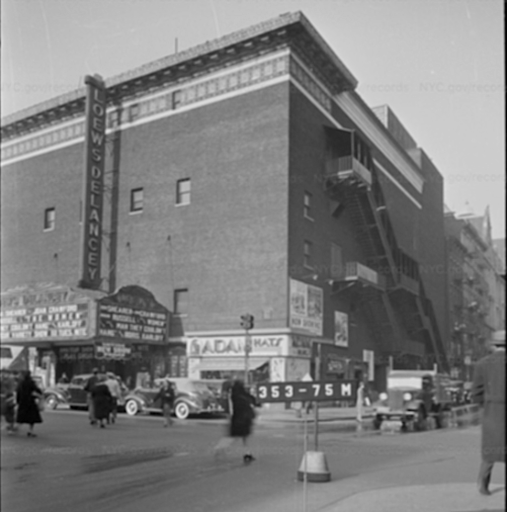
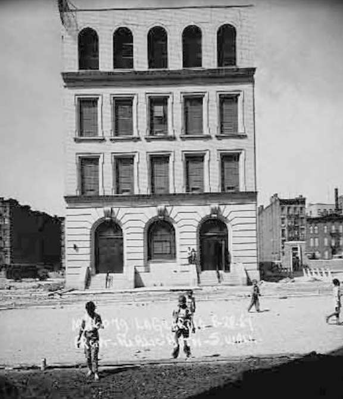

Loew's Theater Delancey (~1940)
https://ephemeralnewyork.wordpress.com/2022/09/19/this-empty-shell-on-delancey-street-was-once-a-movie-palace

Loew's Theater Delancey (2024)
Map data © 2024 Google
All my life I have lived in the L.E.S. , a wonderful place filled with a diverse culture, rich history, and experiences to be made. On this webpage you will find my personal essay written on this great community about the frequently changing nature of this area, photos showcasing central sites in this neighborhood, and restaurants. On this homepage you will find an interactive map where you can explore this area from a birds-eye view along with historic facts so that you can best familiarize yourself with the area.
The Lower East Side was originally farmland before it eventually became the historic immigrant gateway into the us in the 19th century. It is best known for its cramped tenants, and greatly diverse population. There were historically Jewish, German, Irish, Puerto Rican, and Chinese communities in this area, some gone, and some still existing today. German, Irish, and Jewish populations settled from the mid-to-late-1800s untl the early 1900s. The German, and Irish populations are still not around today. In the mid-1900s, primarily following World War Two (1939-1945), an influx of Puerto Rican, and other Latin American residents took place, as well as an increase in the Chinese residential population. Today it faces a rise in gentrification which raising rent, displacing local residents, and causing small/local business to struggle. Due to large businesses, companies, chains moving into this community along with simple neglect, many historic landmark previous centers for community no longer exist, have not been preserved, or are not available for public observation.

https://ephemeralnewyork.wordpress.com/2022/09/19/this-empty-shell-on-delancey-street-was-once-a-movie-palace
Map data © 2024 Google

https://forgotten-ny.com/2018/03/rutgers-bathhouse-lower-east-side/

https://ephemeralnewyork.wordpress.com/2019/02/25/elegy-for-a-lower-east-side-public-bath-house/